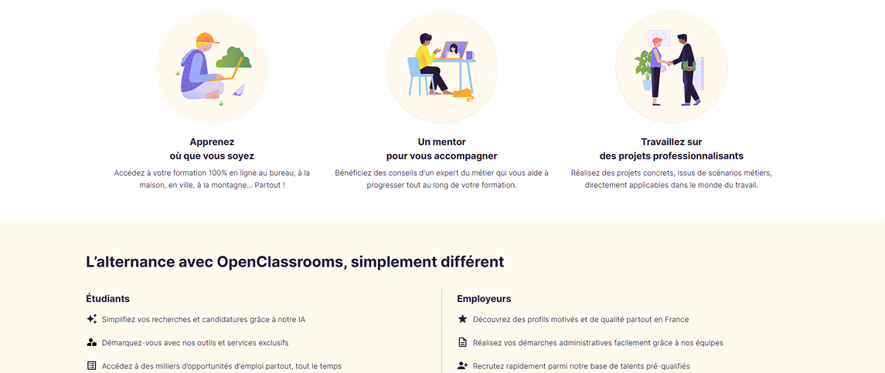
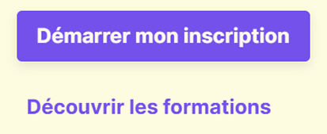
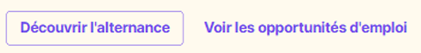
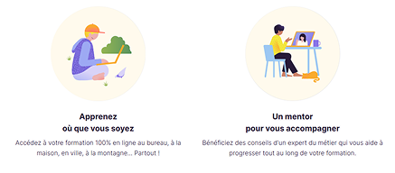
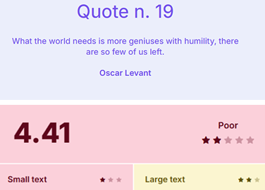

OpenClassrooms est une plateforme française de formation en ligne proposant des parcours éducatifs adaptés à divers profils. L’objectif de cet audit est d’analyser la page d’accueil afin d’identifier les points forts et axes d’amélioration pour optimiser l’expérience utilisateur.
1 / 4 Introduction.
2. Méthodologie
L’audit s’appuie sur plusieurs critères UX/UI clés :
Navigation et architecture de l’information.
Lisibilité et hiérarchie visuelle.
Esthétique et cohérence graphique.
Appels à l’action (CTA).
Accessibilité (contrastes, navigation).
2 / 4 Méthodologie.
3. Analyse détaillée
Navigation et structure
Menu clair et visible, bien organisé avec des catégories distinctes.
Les sections sont bien délimitées, mais une segmentation plus marquée améliorerait la lecture.
Contenu et lisibilité
Titres bien hiérarchisés, textes clairs et concis.
Usage pertinent d’illustrations modernes, qui renforcent l’identité visuelle.

Appels à l’action (CTA)
Incohérence des CTA : Le bouton principal violet coexiste avec des variantes secondaires (contour ou texte seul), parfois utilisées comme des boutons principaux.
Cela brouille la hiérarchie visuelle et nécessite une meilleure distinction des rôles.
Esthétique
Palette de couleurs harmonieuse, typographie moderne et lisible.
Manque d’espaces blancs pour aérer le contenu, ce qui alourdit visuellement la page.



Accessibilité
Contraste généralement satisfaisant.
Navigation au clavier fonctionnelle mais perfectible, notamment pour le focus visible sur les éléments interactifs.
Contraste insuffisant: Le bouton secondaire violet sur fond violet clair manque de contraste, ce qui peut nuire à sa lisibilité et son accessibilité.

3 / 4 Analyse détaillée.
4. Conclusion
Audit UX – Synthèse
Cet audit met en lumière un site solide avec une identité forte, mais qui gagnerait à être allégé et mieux orienté vers l’action utilisateur.
La charte graphique est cohérente, le message de marque est clair, et l’univers visuel correspond bien à la cible.
La navigation est intuitive, avec une hiérarchie visuelle claire qui guide l’utilisateur naturellement à travers la page.
Attention toutefois au contraste de certains textes et à la gestion des espaces blancs, qui peuvent nuire à la lisibilité et à la clarté de l’ensemble.